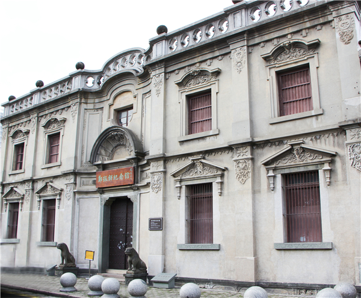
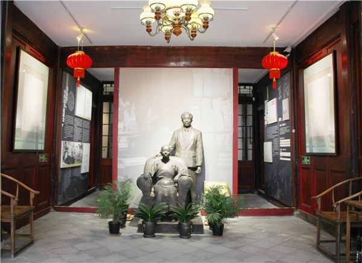
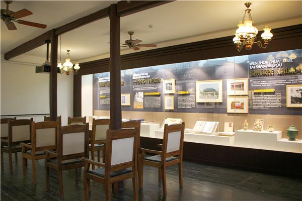

郑振铎纪念馆（浙江温州）

郑振铎纪念馆（浙江温州）内部展陈1

郑振铎纪念馆（浙江温州）内部展陈2
郑振铎纪念馆依托于浙江省文物保护单位（沧河巷金宅）进行布展，建筑面积1404平方米。纪念馆保持民国时期建筑风格，陈列布展营造江南庭院建筑“书香之家”的氛围，曾荣获浙江十大精品陈列奖、浙江省文物保护利用十大优秀案例等荣誉，并入围“全国十大精品陈列奖”。展厅共有“书生报国数十载”、“心怀温州故乡情”、“一代才华万古传”、“鞠躬尽瘁为文物”四个单元，分别介绍郑振铎的生平，郑振铎的温州情节，郑振铎的交友、著作等情况，郑振铎对文物考古事业的贡献，同时展出郑振铎家属捐赠的各类相关文物,还有郑振铎的散文、小说作品、翻译作品，怀念他的文章等。2020年7月，民进温州市委会在纪念馆增设了“郑振铎与民进”的内容，并将之命名为“民进厅”。